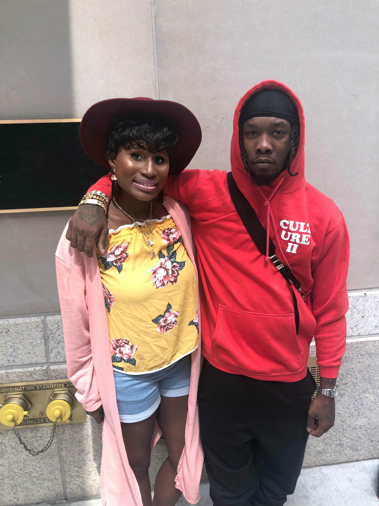
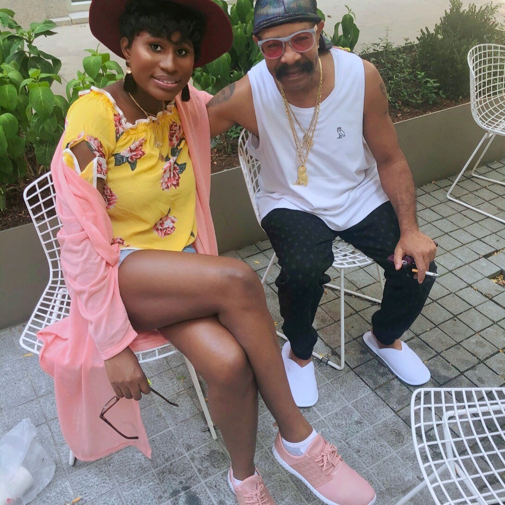
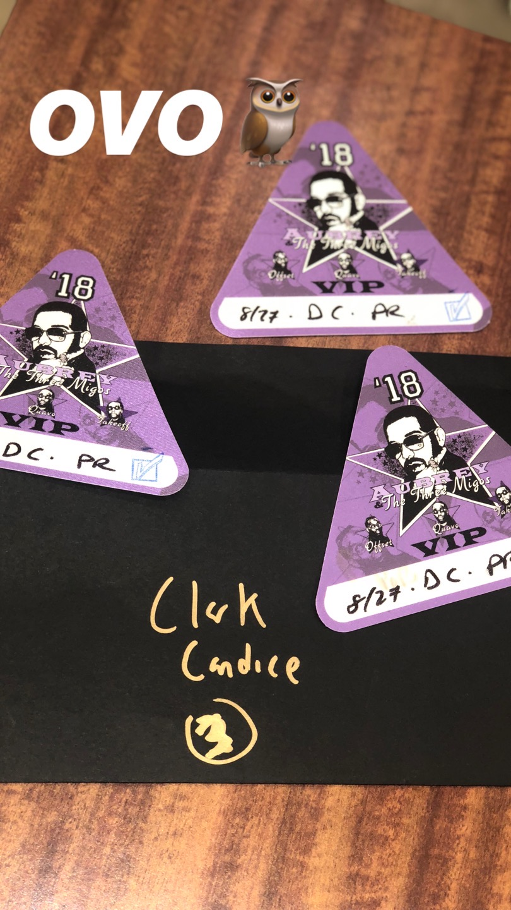
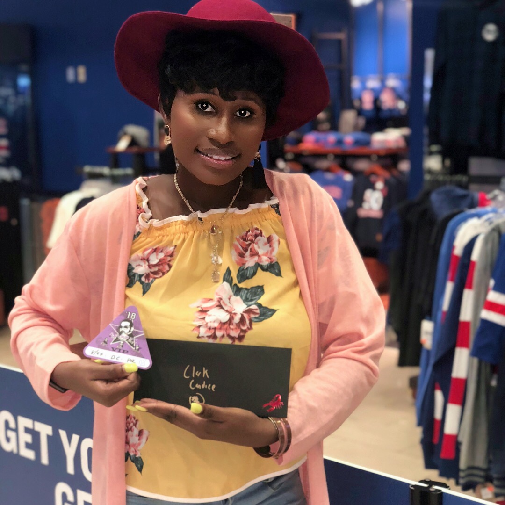
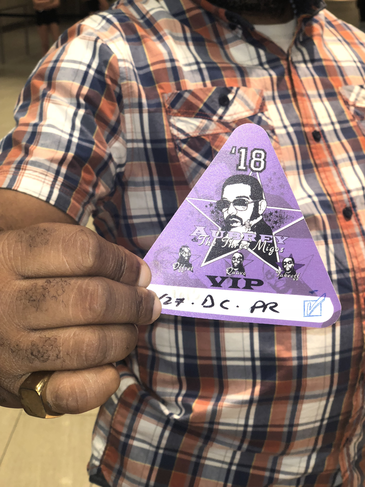

Dreams are indeed made. I pinch myself to confirm this is true. I played "Empire State Of Mind" by Alica Keys and Jay Z on my phone. I could hear around me despite the loud level. In NYC, you can meet anyone, so I'm rocking out. Guess who comes in the back with a security squad and shopping bags as I sing loudly. OFFSET married Cardi B. He asked me what song I was listening to when I was grooving, so I turned down my level and responded Empire State Mind. He said he liked it. He used to dream big of being a rapper. I smiled and asked for a selfie, and he said sure. The photo was taken. He's 1/3 of Migos. They performed alongside Drake that night. My Cinderella moment begins here. See my fairy GodMother below. Know who it is? Guess.
Offest and Me. By the way, he smelled so good!
Did you guess Drake? Sadly, it wasn't Drake but it was his father Mr. Dennis Graham. He sat right behind me and started smoking very heavy. My body was feeling it but I didn't want to get up and be rude. And lucky I didn't because after he was finished he turned to me and I said, "Hi Mr. Graham." He goes you know me and I am like of course I do you are Drake dad. See I grew up on a show called Degrassi and Drake character Jimmy was one of my favorite. Anyways my friend Shawn finally shows and sit next to me and says hi to Drake dad. So his father looked at me and said are you going to Drakes concert. I said I would like to go but it is complete sold out but I'll watch it from instagram. He goes NO! You are going to his concert. I said How? He goes I am Drake Dad. What is your name? I said my name is Candace Clarke. He took my name down in his mind and said okay I'll be back. We asked for a photo and he was happy to take it with me. Two hours had passed and he didn't come back out so I thought it was a lie and it wasn't going to happen but for some reason I was not moving from my seat and Shawn was too excited and said to me I think Drake dad is taking a liking to you. I'm like yeah right and all he did was smile which made me confused. So we sat and played the waiting game on Drake's dad.
He finally comes out fully swagged out and calls my name and said, "Candace the tickets are in your name." He told me to take down his number if anything goes wrong.I looked and him in comeplete and shock and said, "Thank you, Mr.Graham." As me and Shawn wave him off he said, "see you guys at the concert." Once the car pulled off me and shawn had WHAT THE HELL moment? Like is this real. I had wanted to go home, shower, change, and look cute for tonight but time was going that I knew it wasn't just me attending the concert. So we left the lounge and took the first train heading to Madison Square Garden. We showed up at 6:00 and I went to go claim my tickets and I was shock to see my name on a enevelope and our tickets be V.I.P! In that moment I knew how Lindsay Lohan character in Confession of Teenage Drama felt when she met her favorite rock star STU. Now I was little turned off that my name was spelt incorrect but then I got happy seeing that I got VIP tickets. I couldn't hold my excitement in that I posted on facebook. And those friends I told you about in the beginning were now rining my phone if they can come and be my plus one.
Showing off my VIP tickets like it's a first place trophy
Shawn showing off his VIP